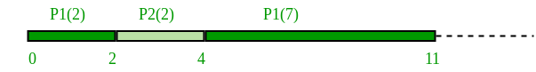

In previous post, we have discussed Set 1 of SJF i.e. non-preemptive. In this post we will discuss the preemptive version of SJF known as Shortest Remaining Time First (SRTF).
In this scheduling algorithm, the process with the smallest amount of time remaining until completion is selected to execute. Since the currently executing process is the one with the shortest amount of time remaining by definition, and since that time should only reduce as execution progresses, processes will always run until they complete or a new process is added that requires a smaller amount of time.
Preemptive SJF: Example
| Process | Duration | Order | Arrival Time |
|---|---|---|---|
| P1 | 9 | 1 | 0 |
| P2 | 2 | 2 | 2 |

P1 waiting time: 4-2 = 2
P2 waiting time: 0
The average waiting time(AWT): (0 + 2) / 2 = 1
Advantage:
1- Short processes are handled very quickly.
2- The system also requires very little overhead since it only makes a decision when a process completes or a new process is added.
3- When a new process is added the algorithm only needs to compare the currently executing process with the new process, ignoring all other processes currently waiting to execute.
Disadvantage:
1- Like shortest job first, it has the potential for process starvation.
2- Long processes may be held off indefinitely if short processes are continually added.
Source:Wiki
Implementation:
1- Traverse until all process gets completely
executed.
a) Find process with minimum remaining time at
every single time lap.
b) Reduce its time by 1.
c) Check if its remaining time becomes 0
d) Increment the counter of process completion.
e) Completion time of current process =
current_time +1;
e) Calculate waiting time for each completed
process.
wt[i]= Completion time - arrival_time-burst_time
f)Increment time lap by one.
2- Find turnaround time (waiting_time+burst_time).
C/C++
// C++ program to implement Shortest Remaining
// Time First
#include <bits/stdc++.h>
using namespace std;
struct Process {
int pid; // Process ID
int bt; // Burst Time
int art; // Arrival Time
};
// Function to find the waiting time for all
// processes
void findWaitingTime(Process proc[], int n,
int wt[])
{
int rt[n];
// Copy the burst time into rt[]
for (int i = 0; i < n; i++)
rt[i] = proc[i].bt;
int complete = 0, t = 0, minm = INT_MAX;
int shortest = 0, finish_time;
bool check = false;
// Process until all processes gets
// completed
while (complete != n) {
// Find process with minimum
// remaining time among the
// processes that arrives till the
// current time`
for (int j = 0; j < n; j++) {
if ((proc[j].art <= t) &&
(rt[j] < minm) && rt[j] > 0) {
minm = rt[j];
shortest = j;
check = true;
}
}
if (check == false) {
t++;
continue;
}
// Reduce remaining time by one
rt[shortest]--;
// Update minimum
minm = rt[shortest];
if (minm == 0)
minm = INT_MAX;
// If a process gets completely
// executed
if (rt[shortest] == 0) {
// Increment complete
complete++;
// Find finish time of current
// process
finish_time = t + 1;
// Calculate waiting time
wt[shortest] = finish_time -
proc[shortest].bt -
proc[shortest].art;
if (wt[shortest] < 0)
wt[shortest] = 0;
}
// Increment time
t++;
}
}
// Function to calculate turn around time
void findTurnAroundTime(Process proc[], int n,
int wt[], int tat[])
{
// calculating turnaround time by adding
// bt[i] + wt[i]
for (int i = 0; i < n; i++)
tat[i] = proc[i].bt + wt[i];
}
// Function to calculate average time
void findavgTime(Process proc[], int n)
{
int wt[n], tat[n], total_wt = 0,
total_tat = 0;
// Function to find waiting time of all
// processes
findWaitingTime(proc, n, wt);
// Function to find turn around time for
// all processes
findTurnAroundTime(proc, n, wt, tat);
// Display processes along with all
// details
cout << "Processes "
<< " Burst time "
<< " Waiting time "
<< " Turn around time\n";
// Calculate total waiting time and
// total turnaround time
for (int i = 0; i < n; i++) {
total_wt = total_wt + wt[i];
total_tat = total_tat + tat[i];
cout << " " << proc[i].pid << "\t\t"
<< proc[i].bt << "\t\t " << wt[i]
<< "\t\t " << tat[i] << endl;
}
cout << "\nAverage waiting time = "
<< (float)total_wt / (float)n;
cout << "\nAverage turn around time = "
<< (float)total_tat / (float)n;
}
// Driver code
int main()
{
Process proc[] = { { 1, 6, 1 }, { 2, 8, 1 },
{ 3, 7, 2 }, { 4, 3, 3 } };
int n = sizeof(proc) / sizeof(proc[0]);
findavgTime(proc, n);
return 0;
}
Java
// Java program to implement Shortest Remaining
// Time First
class Process
{
int pid; // Process ID
int bt; // Burst Time
int art; // Arrival Time
public Process(int pid, int bt, int art)
{
this.pid = pid;
this.bt = bt;
this.art = art;
}
}
public class GFG
{
// Method to find the waiting time for all
// processes
static void findWaitingTime(Process proc[], int n,
int wt[])
{
int rt[] = new int[n];
// Copy the burst time into rt[]
for (int i = 0; i < n; i++)
rt[i] = proc[i].bt;
int complete = 0, t = 0, minm = Integer.MAX_VALUE;
int shortest = 0, finish_time;
boolean check = false;
// Process until all processes gets
// completed
while (complete != n) {
// Find process with minimum
// remaining time among the
// processes that arrives till the
// current time`
for (int j = 0; j < n; j++)
{
if ((proc[j].art <= t) &&
(rt[j] < minm) && rt[j] > 0) {
minm = rt[j];
shortest = j;
check = true;
}
}
if (check == false) {
t++;
continue;
}
// Reduce remaining time by one
rt[shortest]--;
// Update minimum
minm = rt[shortest];
if (minm == 0)
minm = Integer.MAX_VALUE;
// If a process gets completely
// executed
if (rt[shortest] == 0) {
// Increment complete
complete++;
// Find finish time of current
// process
finish_time = t + 1;
// Calculate waiting time
wt[shortest] = finish_time -
proc[shortest].bt -
proc[shortest].art;
if (wt[shortest] < 0)
wt[shortest] = 0;
}
// Increment time
t++;
}
}
// Method to calculate turn around time
static void findTurnAroundTime(Process proc[], int n,
int wt[], int tat[])
{
// calculating turnaround time by adding
// bt[i] + wt[i]
for (int i = 0; i < n; i++)
tat[i] = proc[i].bt + wt[i];
}
// Method to calculate average time
static void findavgTime(Process proc[], int n)
{
int wt[] = new int[n], tat[] = new int[n];
int total_wt = 0, total_tat = 0;
// Function to find waiting time of all
// processes
findWaitingTime(proc, n, wt);
// Function to find turn around time for
// all processes
findTurnAroundTime(proc, n, wt, tat);
// Display processes along with all
// details
System.out.println("Processes " +
" Burst time " +
" Waiting time " +
" Turn around time");
// Calculate total waiting time and
// total turnaround time
for (int i = 0; i < n; i++) {
total_wt = total_wt + wt[i];
total_tat = total_tat + tat[i];
System.out.println(" " + proc[i].pid + "\t\t"
+ proc[i].bt + "\t\t " + wt[i]
+ "\t\t" + tat[i]);
}
System.out.println("Average waiting time = " +
(float)total_wt / (float)n);
System.out.println("Average turn around time = " +
(float)total_tat / (float)n);
}
// Driver Method
public static void main(String[] args)
{
Process proc[] = { new Process(1, 6, 1),
new Process(2, 8, 1),
new Process(3, 7, 2),
new Process(4, 3, 3)};
findavgTime(proc, proc.length);
}
}
Output:
Processes Burst time Waiting time Turn around time 1 6 3 9 2 8 16 24 3 7 8 15 4 3 0 3 Average waiting time = 6.75 Average turn around time = 12.75